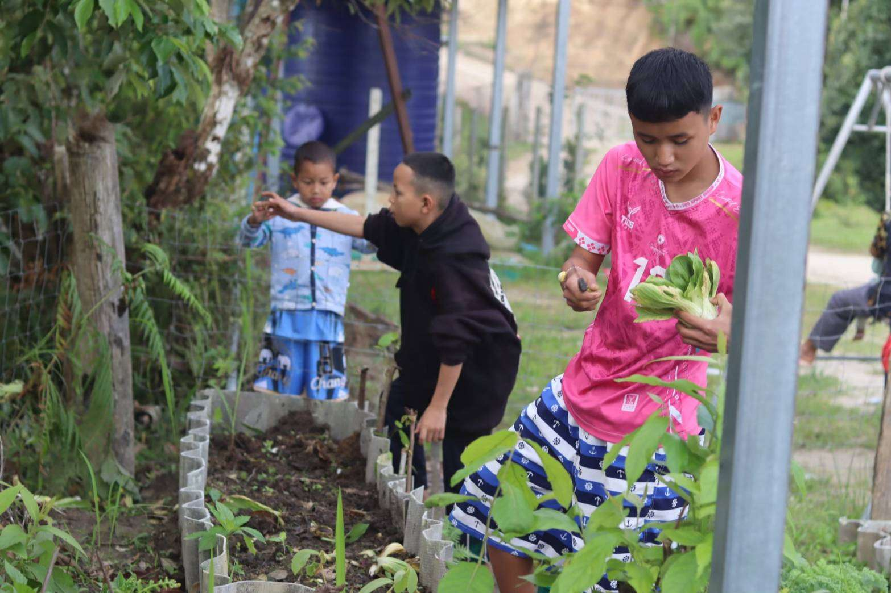

Research collection
Research portfolio

- StudyCauses usability benchmarkCore tasks, experience measures, and a foundation for prioritization.
- StudyDonor motivations and MaxDiffPublished priorities and implications for design and messaging.
- StudyOutcome based browsingCurrent and proposed experiences, research questions, and evaluation design.
- StudyPartner usability and workloadField evaluation of partner workflows, usability, and perceived workload.
- MethodThe 4D experience scorecardConnect local product measures to shared experience questions.
- GuideResearch Template (ART form)Research intake, collaboration, and decision traceability.